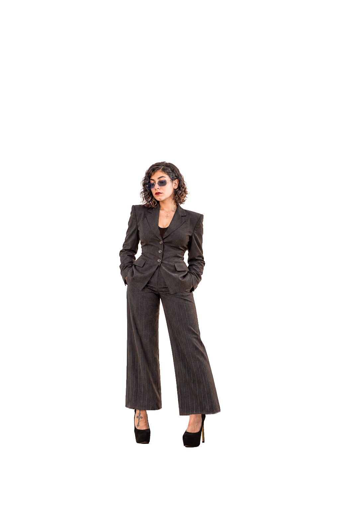

BORN TO CREATE
I have always believed that humans are far too complex to be defined by one thing. I am a photographer, filmmaker, graphic designer, writer, and musician. But above all, I am a creator.
My creativity extends beyond the camera. I work with Adobe Photoshop, Lightroom, Illustrator, Adobe XD, Premiere Pro, InDesign, and CapCut to develop and bring visual ideas to life. I also have experience using Visual Studio Code, HTML, and Python, allowing me to explore the intersection of design, technology, and storytelling.
Somewhere along the way, I discovered the art of noticing. The beauty in ordinary moments, the emotions that go unspoken, and the stories waiting to be told.
"I genuinely believe my purpose is to create."
INDEPENDENT CREATIVE STUDIO / EST. BY MONSE
PICK UP TO CONNECT ↗My creative toolkit.
Photoshop
Lightroom
Illustrator
Adobe XD
Premiere Pro
CapCut
InDesign
VS Code
HTML
Python
CALIFORNIA
TO TEXAS.
Originally from California, I now reside in Texas. Both places are part of my story, and the experiences I've gathered along the way continue to shape the way I see the world.
THROUGH
THE LENS.
I began taking photographs in church in 2012, when I was just seven years old. What started as something so simple became another way for me to express myself and notice the beauty in the moments happening around me.
CLICK TO SPREAD THE PHOTOGRAPHS ↗
02 / THE STORY
ART IS MORE
THAN WHAT
YOU SEE.
My creative journey has been shaped by a fascination with how visuals communicate stories, emotions, and identities.
Through photography, videography, and design, I've developed a multidisciplinary approach to creating work that feels both intentional and expressive.
As a graphic design student with a focus on web design, I continue exploring how different creative disciplines can work together to build something meaningful.
EXPLORE MY WORK ↗SEEING DIFFERENTLY.
files IMAGES / IDEAS / MOMENTS
PROPERTY OF MONSE MEDIA
04 / ANATOMY OF A MARK
THREE M'S.
ONE IDENTITY.
Three curved forms, drawn together into one symbol. Each layer has its own shape, but the identity takes form where they meet.
NOT THREE SEPARATE LOGOS. ONE INTERLOCKING DESIGN.
DECONSTRUCT / STUDY / RECONSTRUCT